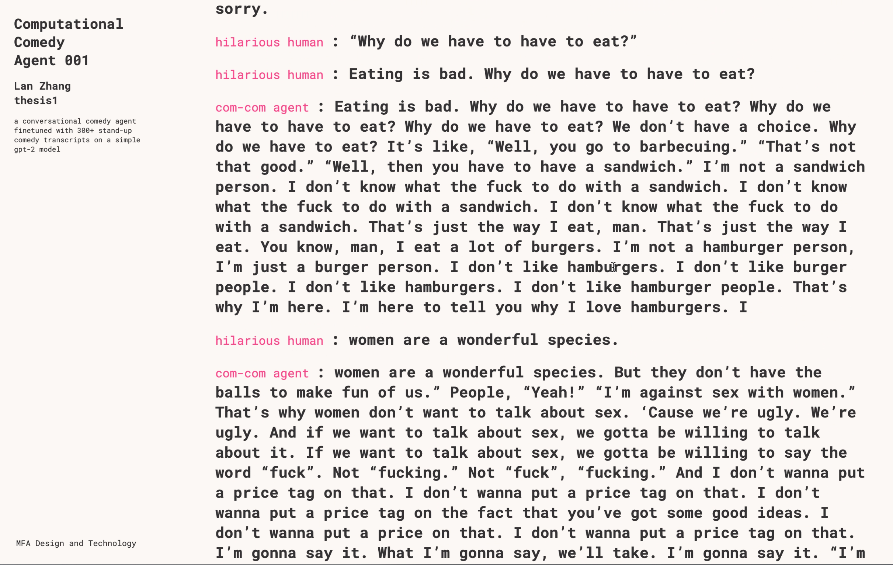

My thesis around Computational Comedy tries to explore the possibilities of machine mirroring human’s capabilities of producing American humor and to investigate the emergence of advancing natural language processing technologies. Computational Comedy stands for using procedural and computational methods to generate comedy content.The final manifestation of “computational comedy” will be one or multiple comedy bot agents participating in a computer-human interactive performance. The bot agents are trained with different stand-up comedian styles and fed with culturally relevant context. These agents are based on an open-API’s language model called gpt-2. They take text inputs and produce sentences that are highly reflective of their learning source. The topic aims to invite audiences to observe the condensed themes and identities of the american comedy landscape through interacting with the agents, further provoking new thinking around our opinions towards what we truly consider humorous by watching machines fail to be funny.
Humor is seen in most of my work. Sometimes it comes out bright and
sometimes it walks on the dark side. I use humor subconsciously as if
it is my voice of delivering difficult messages and my strategic means
of connecting with my audiences. I’m fascinated by it after I
discovered that thread, and now I want to dive in and figure out what
really humor does and means to me on a personal level. People have
written books and theories about breaking down the humor code. Yet,
dissecting humor is still one of the most complicated machine riddles.
There are many factors that go into the complexity such as nuances,
cultural relevancy, language gaps, and joke deliverers’ charisma,
their personalities, and so much more. These are already difficult for
humans to comprehend, not to mention machines. However, we are also at
the most promising stage where powerful learning models and
computational methods are available for taking up bigger challenges.
Developing an interest with working with language and words, these
opportunities incite excitement that I cannot brush aside. Ultimately,
to me personally, humor comprehension is a social experience. Not
understanding jokes or failing to be funny can result in social
exclusions. We are often time at the intersection of “you either
understand then you are in the circle” or “you don’t get the joke so
you are out” situations. These “In-or-Out” situations represent the
cultural experience in American society, especially for those that
don’t speak English as their native language as well as ones that
aren’t culturally informed. I’ve been on this learning curve where I
was constantly at these social crossroads. Overall, I am compelled to
explore one’s understanding towards humor through the lens of
computation and machines.
Throughout the semester of my second year MFA thesis at Parsons school
of design, I’ve explored this area of interest through a lot of
small-scaled experiments, which helped me gain many insights that lead
to my ideation of my thesis form. I started with reading many humor
theories, psychology analysis about how we understand humor and jokes
as a social behavior. Then I started using Markov Chain for generative
comedy text. I tried to recreate Aziz’ Ansari’s comedy texts well as
to recompose my writer friend’s different styles of writing samples.
At one point, I understood I cannot just shy away from addressing the
elephant in the room-performative aspect of comedy. So I pushed myself
by participating in my first Improv class ever, just to get a better
grip of the subject. It turned out to be an eye-opening experience for
me and I continued to do a couple of more performing-related exercised
such as performing at the Culture Hub and Babycastles Wordhack with
Todd Anderson’s internet extension where I improved browsing and
doodling comic experience on Craigslist. While learning more improv
techniques and essence of the realm of studies, I started to have a
better grasp of what entails in such a playful practice. I made an
improv card game that pokes fun at the advertising industry, using a
procedural method and generative elements. Moreover, on a daily basis,
I watch a lot of comedy shows but in an analytic way. I’d apply humor
theories I learned to every scene I see and reflect on every laughter
had(and will never be able to undo watching them analytically). I’ve
also read many interesting books and will continue to read these books
that have inspired me along the way(reading notes can be found in my
process papers).
The final manifestation of “computational
comedy” will take the form of a “conducted story” improv interaction
among generative comedy-agents and human participants. The agents are
generative bots that are trained on an open AI gpt-2 model with input
representing different comedian styles and various context
information. After rounds of machine learning and fine-tuning, agents
will analyze text-input and compose contextualized sentences or
paragraphs that highly reflect their learning sources–mainstream
stand-up comedians’ transcripts, news, and joke rulebooks. A
traditional conducted story is considered a basic warm-up exercise for
improv comedy learners who collectively tell a continuous story
without breaking the flow. However, only one storyteller speaks at a
time, and an additional conductor is required to randomly pass the
turn to one of the actors, who will immediately picks up where the
story was left off and seamlessly fabricate new compatible materials
next.
There have been many questions that I’ve been asking throughout my
semester-long investigative process of learning about comedy. I want
to find answers as well as invite my audiences to try to explore their
versions of answers to these questions as well: First, how does the
American comedy landscape look like in its condensed themes and
bare-bone identity? Secondly, how culturally relevant and
linguistically fluent does one need to be to master the art of humor,
to comprehend contextualized jokes, and to be considered funny?
Thirdly, I’ve read and shared humor theories from many psychologists,
language experts. If there are theories, summarized patterns, and
rulebooks behind becoming a skillful comedian, with the recent NLP
advancements, can these computational methods and studied information
equip someone for learning the ropes? Finally, throughout my process
of doing small-scaled procedural experiments related to text and word,
I’ve come to the conclusion that even with the currently smartest
natural language processing model, the generated outcome is far from
being funny. Although people laugh when they hear generated text as
they are unexpectedly ridiculous and beyond our ordinary imagination.
However, does that mean there might be interesting views and opinions
emerge from this process of human-mimic comedy simulation? Humor
undoubtedly reflects one of the most utter intricacies of the human
mind. Would the attempt to replicate that mind and to fathom the
comedy law be a hilarious act in itself? In other words, is watching a
computer struggle to be funny, funny? In terms of the form, I’d like
to orchestra a four-player conducted story interaction for my thesis
final presentation in April. Having multiple players, consisting of
both bot agents with different comedy styles and a human storyteller,
will showcase the collisions of different input information and
chaotic harmony of machines and humans venturing to tie a story
together. Audiences will be invited to be the conducted story player
or the conductor of the interaction. Potentially, bot agents can
possess an artificial voice. The content will be trained by existing
comedy transcripts/scripts/text-based records to represent different
comedian styles. It will be fascinating to see the contrast of output
among female-only comedians, Americans of color comedians, cis-white
male comedians, and other identities. When these content are delivered
in its barebones, analyzed and learned by the generative bots, it’d be
incredibly interesting to see audiences’ ponderings and
takeaways.There are a couple of alternative forms that align with the
same concept. It would also be interesting to see all human performers
carrying out information generated by bot agents.
The
current stage of the execution is having one generative bot agent
working in a conversational flow. This bot is trained with generic
stand-up comedian transcripts that were scrapped from ScrapsoftheLoft.
The proof of concept exists as a web application where users can type
in any sentences. Once the input is submitted to the system, the user
can switch the storyteller, then the interface will prompt to “please
wait while the agent is writing something funny.”

It’s a fully-functional web-based interaction running on my local
server. These are real conversations between me and my generated bot
agent